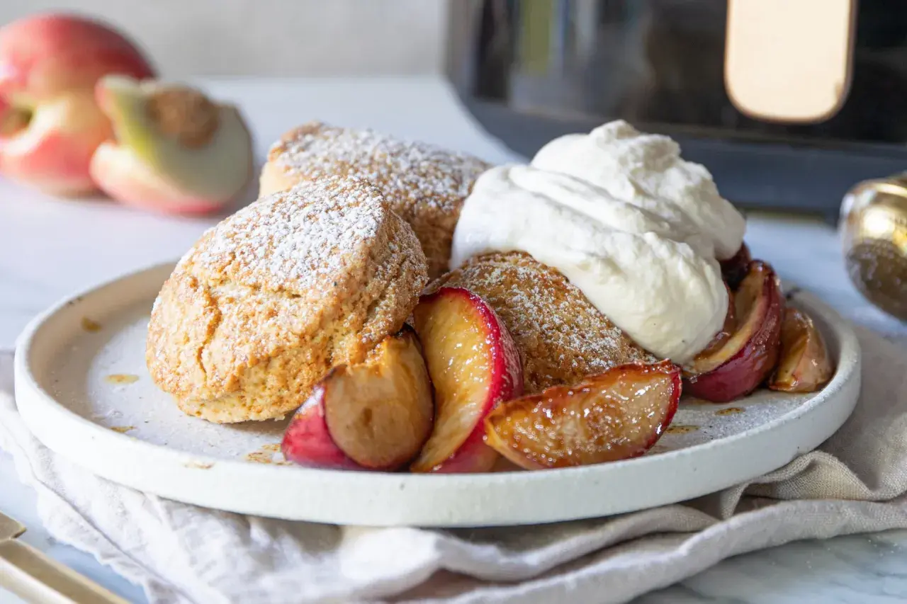

Scones I Airfryer

Scones gjorda med en airfryer
Recept
Nygräddade scones behöver inte betyda att du värmer upp hela ugnen. Att baka scones i airfryer går snabbt, ger en gyllenbrun yta och passar perfekt när du vill ha något varmt till frukost eller eftermiddagskaffet. Här får du ett enkelt grundrecept, tydliga tider och råd för att få sconesen saftiga inuti utan att de blir torra eller råa i mitten.
Ingredienser
- 4 dl vetemjöl
- 2 tsk bakpulver
- 2 tsk strösocker
- 1/2 tsk salt
- 50 g kallt smör
- 2 dl filmjölk eller naturell yoghurt
Gör så här
- Blanda vetemjöl, bakpulver, socker och salt i en bunke.
- Finfördela det kalla smöret med fingertopparna tills blandningen liknar grova brödsmulor.
Rör ner filmjölken och arbeta snabbt ihop till en mjuk deg.
- Platta ut degen till cirka 2 cm tjocklek. Skär ut rundlar med ett glas eller dela degen i två kakor och skåra dem i fyra delar.
- Lägg bakplåtspapper i korgen om det behövs och placera sconesen med lite mellanrum.
- Grädda i 180 °C i 12-15 minuter. Vänd större scones efter halva tiden om undersidan fortfarande är blek.
Text och bild från Scones.se